Медианы, биссектриссы и высоты треугольника
Перпендикуляр от точки к прямой
Отрезок AC называется перпендикуляром, проведённым из точки A к прямой a, если прямые AC и a
перпендикулярны.
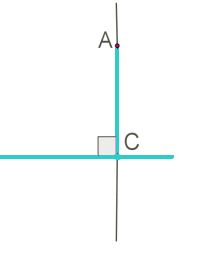
Точка C называется основанием перпендикуляра.
От точки, не лежащей на прямой, можно провести перпендикуляр к этой прямой, и притом только
один.
Допустим, что дан угол∠ABC.
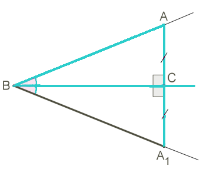
Отложим от луча BC угол, равный данному, и совместим эти углы накладыванием (представим, что
сложим лист бумаги с равными углами по стороне BC).
Сторона BA совместится со стороной BA1.
При этом точка A наложится на некоторую точку A1.
Следовательно совмещается угол ∠ACB с ∠A1CB.
Но углы ∠ACB и ∠A1CB — смежные, значит каждый из них прямой.
Прямая AA1 перпендикулярна прямой BC, а отрезок AC является перпендикуляром от точки A к
прямой
BC.
Если допустить, что через точку A можно провести ещё один перпендикуляр к прямой BC, то он бы
находился на прямой, пересекающейся с AA1. Но две к одной и той же прямой
перпендикулярные
прямые должны быть параллельны и не могут пересекаться.
Это противоречие, что означает: через данную точку к прямой можно провести только один
перпендикуляр.
Медианы, биссектрисы и высоты треугольника
Медиана треугольника — это отрезок, соединяющий вершину треугольника с серединой противолежащей
стороны.
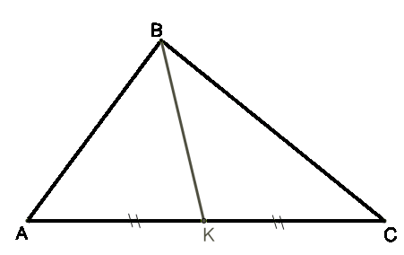
Поэтому для построения медианы необходимо выполнить следующие действия:
1. Найти середину стороны;
2. Соединить точку, являющуюся серединой стороны треугольника, с противолежащей вершиной отрезком —
это и будет медиана.
У треугольника три стороны, следовательно, можно построить три медианы.
Все медианы пересекаются в одной точке.
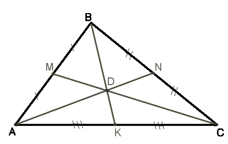
Биссектриса треугольника — это отрезок биссектрисы угла треугольника, соединяющий вершину с
точкой
на противоположной стороне.
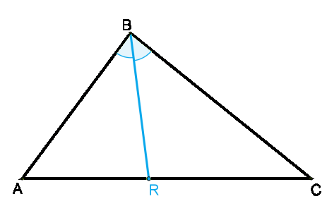
Поэтому, для построения биссектрисы необходимо выполнить следующие действия:
1. Построить биссектрису какого-либо угла треугольника (биссектриса угла — это луч, выходящий из
вершины угла и делящий его на две равные части);
2. Найти точку пересечения биссектрисы угла треугольника с противоположной стороной;
3. Соединить вершину треугольника с точкой пересечения на противоположной стороне отрезком — это и
будет биссектриса треугольника.
У треугольника три угла и три биссектрисы.
Все биссектрисы пересекаются в одной точке.
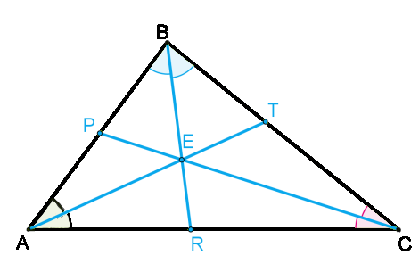
Высота треугольника — это перпендикуляр, опущенный из вершины треугольника к прямой, содержащей
противоположную сторону.
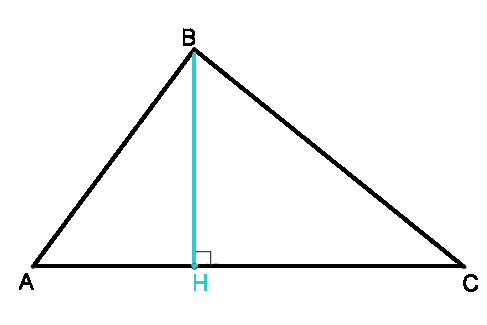
Поэтому, для построения высоты необходимо выполнить следующие действия:
1. Провести прямую, содержащую одну из сторон треугольника (в случае, если проводится высота из
вершины острого угла в тупоугольном треугольнике);
2. Из вершины, лежащей напротив проведённой прямой, опустить перпендикуляр к ней (перпендикуляр —
это отрезок, проведённый из точки к прямой, составляющей с ней угол 90°) — это и будет высота.
Также как медианы и биссектрисы, треугольник имеет три высоты.
Высоты треугольника пересекаются в одной точке.
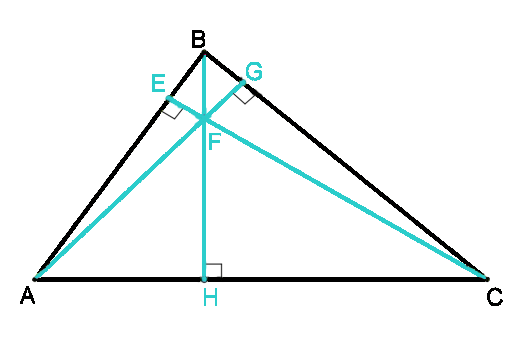
Но, как выше упомянуто, для некоторых видов треугольников построение высот и точки их пересечения
отличается.
Если треугольник с прямым углом, то стороны, образующие прямой угол, можно назвать высотами, так как
они перпендикулярны одна к другой. Точкой пересечения высот является общая вершина перпендикулярных
сторон.
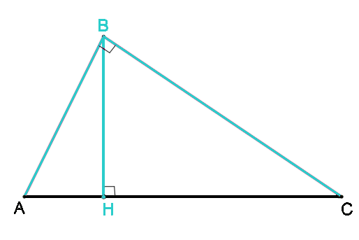
Если треугольник с тупым углом, то высоты, опущенные с вершин острых углов, выходят вне треугольника
к продолжениям сторон. Прямые, на которых расположены высоты, пересекаются вне треугольника.
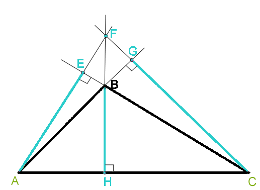
Важно!
Если из одной и той же вершины провести медиану, биссектрису и высоту, то медиана окажется самым
длинным отрезком, а высота — самим коротким отрезком
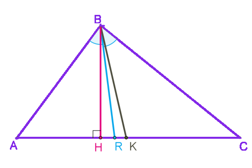